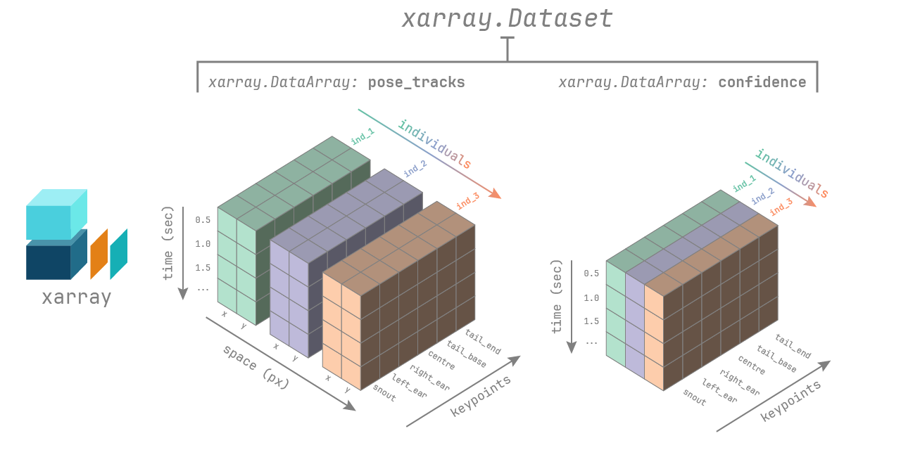

Getting Started#
Installation#
We recommend you install movement inside a conda
or mamba environment.
In the following we assume you have conda installed,
but the same commands will also work with mamba/micromamba.
First, create and activate an environment. You can call your environment whatever you like, we’ve used “movement-env”.
conda create -n movement-env -c conda-forge python=3.10 pytables
conda activate movement-env
Next install the movement package:
To get the latest release from PyPI:
pip install movement
If you have an older version of movement installed in the same environment,
you can update to the latest version with:
pip install --upgrade movement
To get the latest development version, clone the GitHub repository and then run from inside the repository:
pip install -e .[dev] # works on most shells
pip install -e '.[dev]' # works on zsh (the default shell on macOS)
This will install the package in editable mode, including all dev dependencies.
Please see the contributing guide for more information.
Loading data#
You can load predicted pose tracks from the pose estimation software packages DeepLabCut or SLEAP.
First import the movement.io.load_poses module:
from movement.io import load_poses
Then, depending on the source of your data, use one of the following functions:
Load from SLEAP analysis files (.h5):
ds = load_poses.from_sleap_file("/path/to/file.analysis.h5", fps=30)
Load pose estimation outputs from .h5 files:
ds = load_poses.from_dlc_file("/path/to/file.h5", fps=30)
You may also load .csv files (assuming they are formatted as DeepLabCut expects them):
ds = load_poses.from_dlc_file("/path/to/file.csv", fps=30)
If you have already imported the data into a pandas DataFrame, you can convert it to a movement dataset with:
import pandas as pd
df = pd.read_hdf("/path/to/file.h5")
ds = load_poses.from_dlc_df(df, fps=30)
Load from LightningPose (LP) files (.csv):
ds = load_poses.from_lp_file("/path/to/file.analysis.csv", fps=30)
You can also try movement out on some sample data included in the package.
Fetching sample data
You can view the available sample data files with:
from movement import datasets
file_names = datasets.list_pose_data()
print(file_names)
This will print a list of file names containing sample pose data. The files are prefixed with the name of the pose estimation software package, either “DLC” or “SLEAP”.
To get the path to one of the sample files,
you can use the fetch_pose_data_path function:
file_path = datasets.fetch_pose_data_path("DLC_two-mice.predictions.csv")
The first time you call this function, it will download the corresponding file
to your local machine and save it in the ~/.movement/data directory. On
subsequent calls, it will simply return the path to that local file.
You can feed the path to the from_dlc_file or from_sleap_file functions
and load the data, as shown above.
Working with movement datasets#
Loaded pose estimation data are represented in movement as
xarray.Dataset objects.
You can view information about the loaded dataset by printing it:
ds = load_poses.from_dlc_file("/path/to/file.h5", fps=30)
print(ds)
If you are working in a Jupyter notebook, you can also view an interactive
representation of the dataset by simply typing its name - e.g. ds - in a cell.
Dataset structure#

The movement xarray.Dataset has the following dimensions:
time: the number of frames in the videoindividuals: the number of individuals in the videokeypoints: the number of keypoints in the skeletonspace: the number of spatial dimensions, either 2 or 3
Appropriate coordinate labels are assigned to each dimension:
list of unique names (str) for individuals and keypoints,
[‘x’,‘y’,(‘z’)] for space. The coordinates of the time dimension are
in seconds if fps is provided, otherwise they are in frame numbers.
The dataset contains two data variables stored as
xarray.DataArray objects:
pose_tracks: with shape (time,individuals,keypoints,space)confidence: with shape (time,individuals,keypoints)
You can think of a DataArray as a numpy.ndarray with pandas-style
indexing and labelling. To learn more about xarray data structures, see the
relevant documentation.
The dataset may also contain the following attributes as metadata:
fps: the number of frames per second in the videotime_unit: the unit of thetimecoordinates, frames or secondssource_software: the software from which the pose tracks were loadedsource_file: the file from which the pose tracks were loaded
Indexing and selection#
You can access the data variables and attributes of the dataset as follows:
pose_tracks = ds.pose_tracks # ds["pose_tracks"] also works
confidence = ds.confidence
fps = ds.fps # ds.attrs["fps"] also works
You can select subsets of the data using the sel method:
# select the first 100 seconds of data
ds_sel = ds.sel(time=slice(0, 100))
# select specific individuals or keypoints
ds_sel = ds.sel(individuals=["individual1", "individual2"])
ds_sel = ds.sel(keypoints="snout")
# combine selections
ds_sel = ds.sel(time=slice(0, 100), individuals=["individual1", "individual2"], keypoints="snout")
All of the above selections can also be applied to the data variables,
resulting in a DataArray rather than a Dataset:
pose_tracks = ds.pose_tracks.sel(individuals="individual1", keypoints="snout")
You may also use all the other powerful indexing and selection methods provided by xarray.
Plotting#
You can also use the built-in xarray plotting methods
to visualise the data. Check out the Load and explore pose tracks
example for inspiration.
Saving data#
You can save movement datasets to disk in a variety of formats, including DeepLabCut-style files (.h5 or .csv) and SLEAP-style analysis files (.h5).
First import the movement.io.save_poses module:
from movement.io import save_poses
Then, depending on the desired format, use one of the following functions:
Save to SLEAP-style analysis files (.h5):
save_poses.to_sleap_analysis_file(ds, "/path/to/file.h5")
Note
When saving to SLEAP-style files, only track_names, node_names, tracks, track_occupancy,
and point_scores are saved. labels_path will only be saved if the source
file of the dataset is a SLEAP .slp file. Otherwise, it will be an empty string.
Other attributes and data variables
(i.e., instance_scores, tracking_scores, edge_names, edge_inds, video_path,
video_ind, and provenance) are not currently supported. To learn more about what
each attribute and data variable represents, see the
SLEAP documentation.
Save to DeepLabCut-style files (.h5 or .csv):
save_poses.to_dlc_file(ds, "/path/to/file.h5") # preferred format
save_poses.to_dlc_file(ds, "/path/to/file.csv")
Alternatively, you can first convert the dataset to a
DeepLabCut-style pandas.DataFrame using the to_dlc_df function:
df = save_poses.to_dlc_df(ds)
and then save it to file using any pandas method, e.g. to_hdf or to_csv.
Save to LightningPose (LP) files (.csv).
save_poses.to_lp_file(ds, "/path/to/file.csv")
Note
Because LP saves pose estimation outputs in the same format as single-animal DeepLabCut projects, the above command is equivalent to:
save_poses.to_dlc_file(ds, "/path/to/file.csv", split_individuals=True)